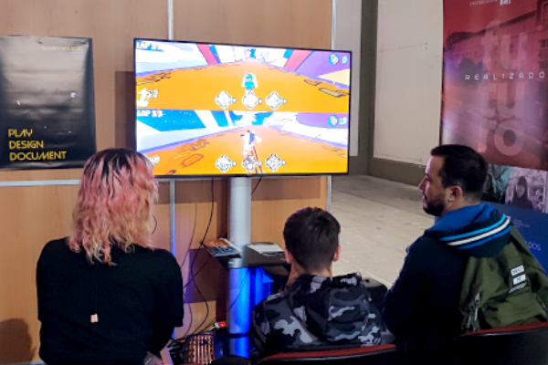
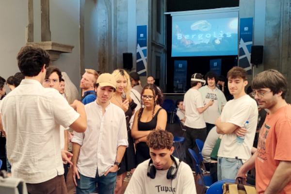
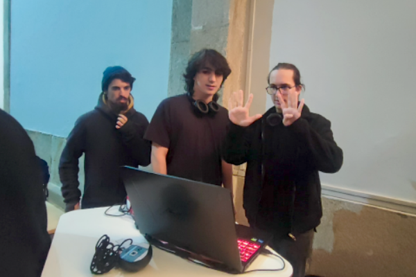
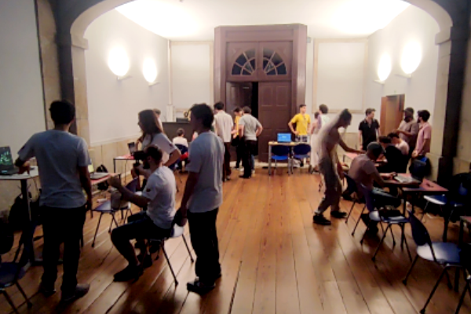
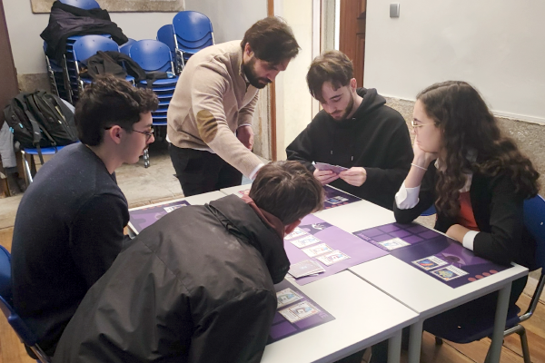
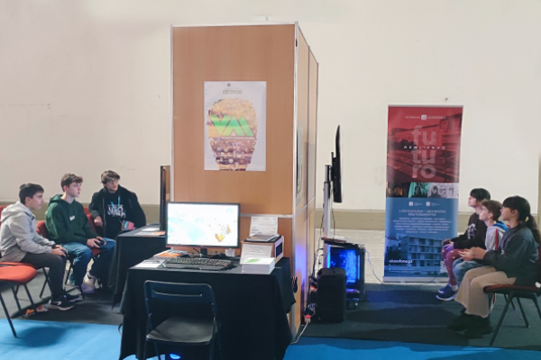
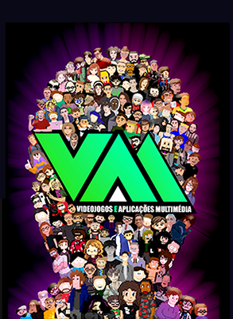
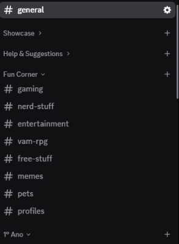
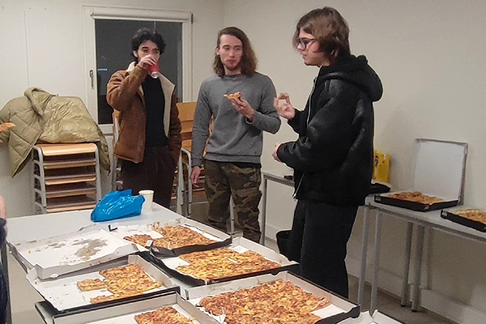

VAM is a Bachelor's degree with an intense practical component that prepares you for the job market. Not sure if you want to pursue programming, art, sound design, or game design? You are in the right place, as you will have the opportunity to learn and experiment in all these areas, gaining a comprehensive view of the main processes and work in the field of Video Games and Multimedia Applications development. The group projects we develop will allow you to specialize in the areas where you demonstrate the most skill; thus, each student's training is personalized, and distinct profiles are developed in each class. The various subjects in the course work in close interconnection, and you will feel that you are always working on small parts of larger projects.








PITCH AND VAM SHOWCASE
Do you struggle with public speaking? We will help you overcome it! Work presentations are an important part of our course, and all students will learn how to present their ideas in the best possible way. Projects are chosen based on the merit, creativity, and feasibility of each proposal. Each semester culminates with a public playtest Showcase of the games, with voting for the best ones.


VAM DISCORD
We have an active Discord community, created and managed by our students and graduates, where professors and professionals are also present. Here, everyone can interact online, showcase work, ask questions, access job opportunities, and debate games, movies, anime, and geek culture in general.



VAM GAME JAM
Every year, on the last weekend of January, Universidade Lusófona is open exclusively for 48 hours to the entire VAM community and new friends. We are one of the JAM Sites representing the global Global Game JAM event, and we welcome everyone interested in creating video games during 48 hours of socializing, creativity, games, and, of course, lots of pizza!
LUSÓFONA - PORTO
Universidade Lusófona Porto University Center is located in the heart of the city with easy access to public transport. It is in full expansion and modernization, with a studio area dedicated entirely to audiovisual and multimedia production coming in the near future.
PROFESSIONAL CAREER PATHS
Video Game Studios
Whether on an Indie scale or in a large team, nationally or internationally, you will be prepared for the job market.
Serious Games Creation
Gamification concepts are vital for creating engaging advertising, training, learning, or outreach content in any area of society.
Digital Animation Studios
Use your 2D and 3D animation knowledge to communicate in a creative and impactful way.
Web and Multimedia Content Creation and Management
Create web pages, manage content production for social media, and multimedia applications.
Audiovisual Art, Multimedia, and AI
Explore your own path and create new opportunities and the jobs of the future.
OUR PARTNERS
Over the years, we have had the opportunity to work with several companies in the field of Video Game and Multimedia Applications development, mainly as internship partners. We highlight some: